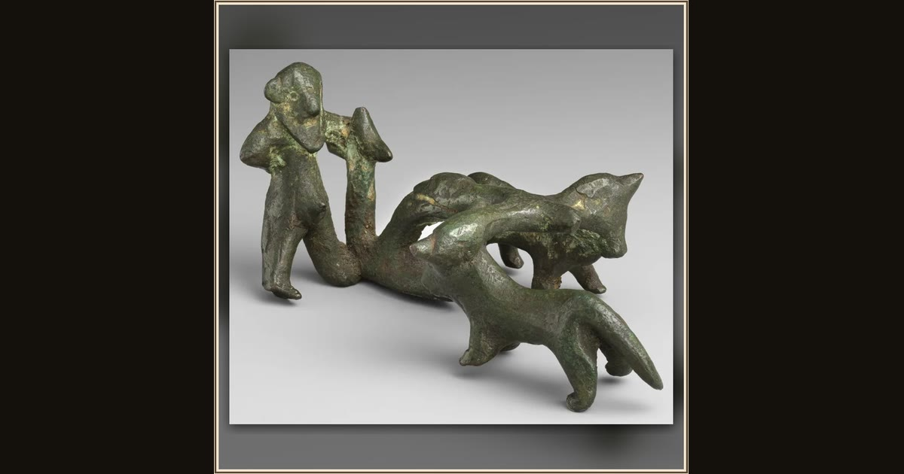

Bronze statuette of a plowing scene
East Greek · First half of 6th century BCE · met
A small East Greek bronze shows a ploughman behind a yoked pair of oxen, the work Hesiod urges in the season for ploughing (460–464) Explore its place in Hesiod's Poems, Works and Days, line 463.